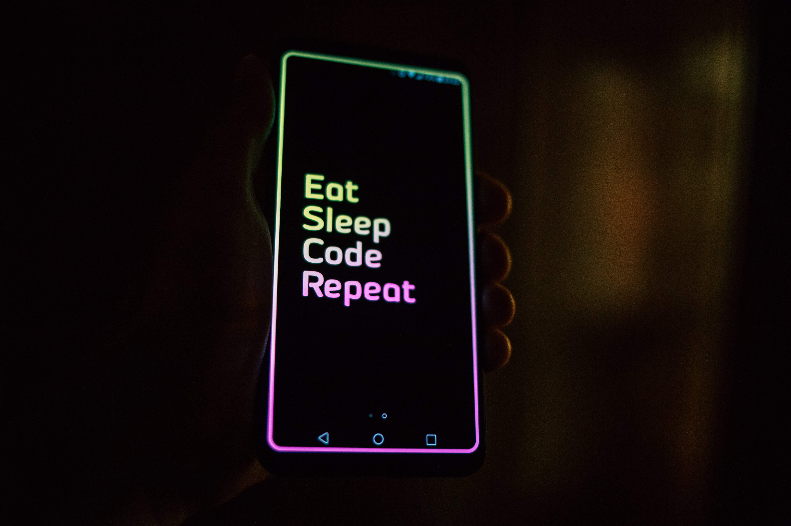

Estudante de Ciência da Computação na PUCPR Mestrando em Estéticas Contemporâneas, Linguagem e Tecnologia na UTFPR
| Experiência Criativa | Raciocínio Algorítmico | Sistemas Ciberfísicos |
|---|---|---|
|  | |
|
| Os projetos desenvolvidos nessa disciplina trabalharam a criatividade e autonomia, além de novas linguagens, como java e HTML. | Em RA foi introduzida a linguagem python, e foram feitos vários trabalhos, como jogos e calculadora. | Nessa disciplina pode-se desenvolver um projeto em simulador de ESP32, programado em micropython. |
| Jogo desenvolvido em Construct 3 | Calculadora com soma, subtração, multiplicação e divisão | Alimentador automático de cães com sensor de movimento |
| Aplicativo multimídia criado em Java Processing | Jogo de Joquenpô com 3 modos: humano vs humano, humano vs computador e computador vs computador | |
| Site sobre atividades para crianças em Curitiba desenvolvido em HTML |